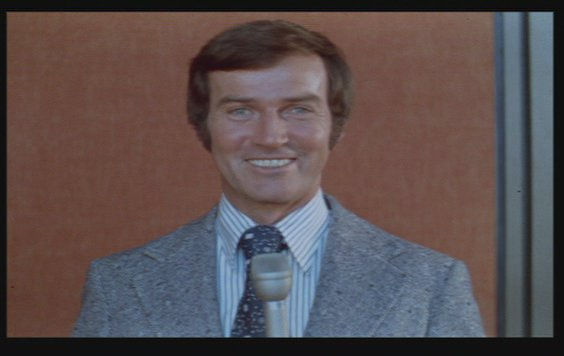
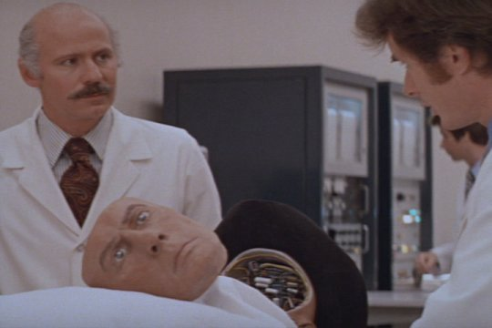
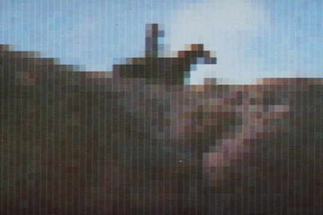

Movie review by : Mr. Roboto
Year : 1973
Directed by : Michael Crichton
Written by : Michael Crichton
Degree of Cyberpunk visuals : Low
Correlation to Cyberpunk themes : Low
Rating : 2/10
Key cast members :

Feeling burned out from net surfing? Has the grind of cyberpunk turned you cortex to pudding? BOY HAVE WE GOT A VACATION FOR YOU! Come on down to Delos Amusement Park and play with our robots that have been programmed with your safety and enjoyment in mind. NOTHING CAN PUSSIB... POBABAB... POSSIBLY GO WORNG!
With Michael Crichton's death earlier this month (04-Nov-2008), I'd thought I'd review one of his most classic movies because of its influence on cyberpunk. Though mostly known for his books-turned-movies like Jurassic Park and The Andromeda Strain and the television series ER, he has also written and directed several movies including Looker and Runaway.
Westworld primarily focuses on the theme of technology run amok, and very little... if anything... on the rest. Crichton's theme-park-gone-fubar plot would be repeated in Jurassic Park, while the idea of robots gone berserk would appear a decade later in a low-budget piece featuring a then unknown Austrian muscle man, and in some other cyberpunk flicks since.
Murphy's law in action. Delos Amusement Park is a near-futuristic adult playground divided into three areas corresponding to different time periods in world history; RomanWorld, MedievalWorld, and the titular WestWorld (briefly refered to as WesternWorld during an orientation video.
John Blaine (Brolin) is returning to WestWorld and brings his friend, Peter Martin, along to experience the six-shooting action where a Yul Brynner robot gunslinger is the main attraction. Things go smoothly... for a while. In the underground control centers, the park technicians notice that robot "malfunctions" are becoming more severe, until a guest is killed in MedievalWorld. Then they realize that even in a place where nothing can possibly go wrong, everything can go wrong.
The Three Laws revisited. While cyberpunk themes are lacking, there is a definite play on Asimov's Three Laws at work. The First Law (protect humans) is obvious with The Gunslinger, who must always lose the duels he starts. The guns also enforce The First Law with sensors that disable firing when it senses it is pointed at a human.
The Second Law (obey humans) is seen in WestWorld's whorehouses and MedievalWorld's slave girls, who are programmed to comply with sexual advances of the guests. When a MedievalWorld slave girl rejects such a request, the technicians begin to suspect that things are about to take a turn for the worst.
The Third Law (protect self) is a bit harder to detect. The robots are programmed to put up a fight and will defend themselves... to a certain degree, but will always allow themselves to be beaten by the guests (again, The Gunslinger).

The Gunslinger gets a facelift... and some new optics.
OK, so why not cyberpunk? Other than being released before Bruce Bethke invented the word, what other factors keep Westworld from being a true cyberpunk movie? For one thing, we don't see much of the world outside the park other than the opening minutes in the hovercraft lounge, so we don't know what state the world is in. Then again, if average-looking schmoes (for the 70's anyway) like Blaine and Martin can afford a grand a day to play with robots, the world can't be in that bad of shape.
Perhaps the biggest reason why the "not cyberpunk" tag is the biggest weakness in the movie: the question of "why did the robots go screw-loose?" is never answered. Bad software? Hardware flaw? "Outside" influences? If the question had been answered in this movie, it could have been a true cyberpunk movie... at least, its star rating would have been higher.

A moment in cinematic history: This chase scene is the first use of computer generated images (CGI) in a movie. Primitive by today's standards, but groundbreaking for 1973.
Conclusion. Ever since its release in theaters, Westworld has been a major influence... if not in cyberpunk then certainly in media in general. Influential enough for a sequel (Futureworld), a series (Beyond Westworld), and now a remake.
Just because it's not cyberpunk, don't let that stop you from adding this sweet slab of 70's sci-fi to your collection. It fits with Crichton's cyberpunk works.